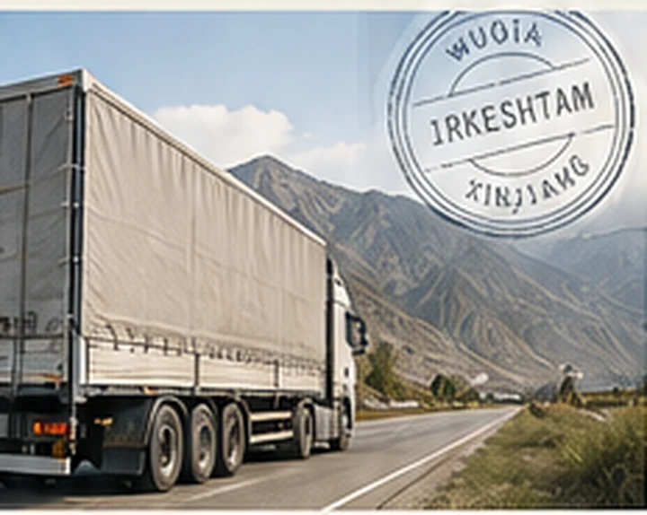

- ۲۱ تا ۲۳ روز
- ووچیا تا تهران، سرویس مستقیم
- ۱۳٫۶ متر
- تریلی چادری
- ۹۶ مترمکعب
- سقف حجم هر خودرو
- ۲۵ تن
- سقف وزن هر خودرو
TIR TRUCK · CHINA → IRAN
کامیون TIR از انبارهای چین تا گمرک ایران
کامیون TIR برای حمل دربست و خردهبار از چین به ایران. بار شما در ایوو، شنژن، گوانگجو یا شانگهای تجمیع میشود و از مرز ووچیا یا خورگوس به گمرک غرب تهران، بندر خشک آپرین یا گمرک مشهد میرسد.
۲۱ تا ۲۳ روز از مرز ووچیا تا تهران با سرویس مستقیم.
برای مسیر داخلی از انبار چین تا ووچیا، حدود ۷ روز جداگانه در نظر بگیرید.

کامیون TIR در چهار عدد
کامیون TIR؛ سرویس مستقیم و سرویس تعویضی
در مسیر ووچیا میتوانید برای سرویس مستقیم یا تعویضی استعلام بگیرید. زمان حمل هر مقصد در جدول آمده است.
سرویس مستقیم: یکبار تعویض کامیون در بخارا.
سرویس تعویضی: تعویض کامیون در اوش و بخارا؛ برای برخی محمولهها، یک تعویض دیگر در مرز ایران انجام میشود.
| مقصد | سرویس مستقیم | سرویس تعویضی |
|---|---|---|
| مشهد | ۱۸ تا ۲۱ روز | ۲۴ تا ۲۸ روز |
| تهران | ۲۱ تا ۲۳ روز | ۲۶ تا ۳۰ روز |
مبدأ محاسبه زمانهای جدول، مرز ووچیا است. مسیر داخلی چین حدود ۷ روز جداگانه محاسبه میشود. این بازهها مربوط به شرایط فعلی تردد هستند، با وضعیت مرزها تغییر میکنند و تعهد قطعی زمان تحویل محسوب نمیشوند.
کامیون TIR؛ دو مسیر از چین به ایران
- انبار چین
- ووچیا
- قرقیزستان
- ازبکستان
- ترکمنستان
- ایران
برنامه تعویض: سرویس مستقیم یکبار در بخارا؛ سرویس تعویضی در اوش و بخارا، و برای برخی محمولهها بار دیگر در مرز ایران.
- انبار چین
- خورگوس
- قزاقستان
- ازبکستان
- ترکمنستان
- ایران
زمان حمل و برنامه تعویض کامیون: مورد به مورد.
مقاصد قابل استعلام: گمرک غرب تهران / بندر خشک آپرین / گمرک مشهد.
کامیون TIR، حمل دریایی و هوایی؛ مقایسه محل رسیدن بار
هنگام انتخاب روش حمل، هم محل رسیدن بار را بررسی کنید و هم مبدأ محاسبه زمان را.
| روش حمل | مبنای زمان حمل | محل رسیدن بار |
|---|---|---|
| کامیون TIR مستقیم | ۲۱ تا ۲۳ روز از مرز ووچیا | گمرک غرب تهران / بندر خشک آپرین |
| حمل دریایی | ۳۵ تا ۵۵ روز، تا بندر | بندرعباس |
| حمل هوایی | ۵ تا ۸ روز، تا فرودگاه | پایانه بار فرودگاه امام خمینی تهران |
بازههای حمل دریایی و هوایی، مبدأ محاسبه مشترکی با مسیر کامیونی از ووچیا ندارند و نباید بهعنوان زمان یک مسیر کامل یکسان مقایسه شوند.
کامیون TIR؛ شش مرحله حمل در مسیر ووچیا
تجمیع بار در چین
بار به انبار ایوو، شنژن، گوانگجو یا شانگهای تحویل میشود. پکینگلیست و فاکتور بررسی و بارگیری هماهنگ میشود.
خروج از مرز ووچیا
گمرک بار را بررسی میکند، پلمب را نصب و کارنه TIR را برای خروج تأیید میکند.
عبور از قرقیزستان
بار سرویس تعویضی برای نخستین بار در اوش به کامیون دیگر منتقل میشود. سرویس مستقیم از این نقطه عبور میکند.
تعویض کامیون در بخارا
تنها تعویض سرویس مستقیم در بخارا انجام میشود. برای سرویس تعویضی، این دومین تعویض است.
عبور از ترکمنستان و ورود به ایران
بار از مرز سرخس وارد ایران میشود. برخی محمولهها در مرز ایران یک تعویض دیگر دارند.
تحویل در گمرک مقصد
بار به گمرک مشهد، گمرک غرب تهران یا بندر خشک آپرین میرسد. تحویل با شرایط CPT / DAP در محوطه گمرکی انجام میشود؛ هماهنگی ترخیص وارداتی و پرداخت حقوق و عوارض بر عهده خریدار است.
کامیون TIR؛ نوع تریلی و کالاهای قابل استعلام
تریلی چادری ۱۳٫۶ متری با سقف ۹۶ مترمکعب و ۲۵ تن برای هر خودرو. هر دو محدودیت حجم و وزن همزمان اعمال میشوند. حمل دربست و خردهبار پذیرفته میشود؛ حداقل خردهبار ۱ مترمکعب یا ۱۰۰ کیلوگرم است. بخش مازاد بر ظرفیت هر خودرو جداگانه قیمتگذاری میشود.
برای این گروههای کالا میتوانید استعلام بفرستید:
- تجهیزات خورشیدی و برق: پنل خورشیدی، اینورتر صنعتی و ترانسفورماتور.
- ماشینآلات صنعتی: دستگاه تزریق پلاستیک، تجهیزات CNC و پرس صنعتی. برای بررسی نحوه بارگیری، ابعاد دستگاه را ارسال کنید.
- مواد پلیمری و شیمیایی صنعتی: مستربچ و مواد اولیه پلییورتان. همراه استعلام، برگه MSDS را بفرستید.
استعلام کامیون TIR با سه مورد اطلاعات
- انبار مبدأ: ایوو / شنژن / گوانگجو / شانگهای.
- گمرک مقصد: گمرک غرب تهران / بندر خشک آپرین / گمرک مشهد.
- مشخصات کالا: نام کالا، کد HS، وزن ناخالص به کیلوگرم و حجم به مترمکعب.
بر اساس مشخصات کالا و مسیر شما، برنامه حمل و کرایه اعلام میکنیم.
پرسشهای متداول استعلام کامیون TIR
در کدام شهرهای چین میتوان بار را تجمیع کرد؟
ایوو، شنژن، گوانگجو و شانگهای. هنگام استعلام، انبار مبدأ را مشخص کنید.
اگر بار من به اندازه یک کامیون کامل نباشد، امکان ارسال هست؟
برای خردهبار میتوانید استعلام بگیرید. حداقل بار ۱ مترمکعب یا ۱۰۰ کیلوگرم است.
آیا سرویس مستقیم هم تعویض کامیون دارد؟
بله. در مسیر ووچیا، سرویس مستقیم یکبار در بخارا تعویض کامیون دارد.
زمان حمل مسیر خورگوس چگونه مشخص میشود؟
انبار مبدأ، گمرک مقصد و مشخصات کالا را ارسال کنید. زمان حمل و برنامه تعویض کامیون مورد به مورد اعلام میشود.
برای قیمتگذاری چه مشخصاتی از کالا لازم است؟
نام کالا، کد HS، وزن ناخالص و حجم. برای ماشینآلات، ابعاد و برای مواد شیمیایی، برگه MSDS را هم ارسال کنید.